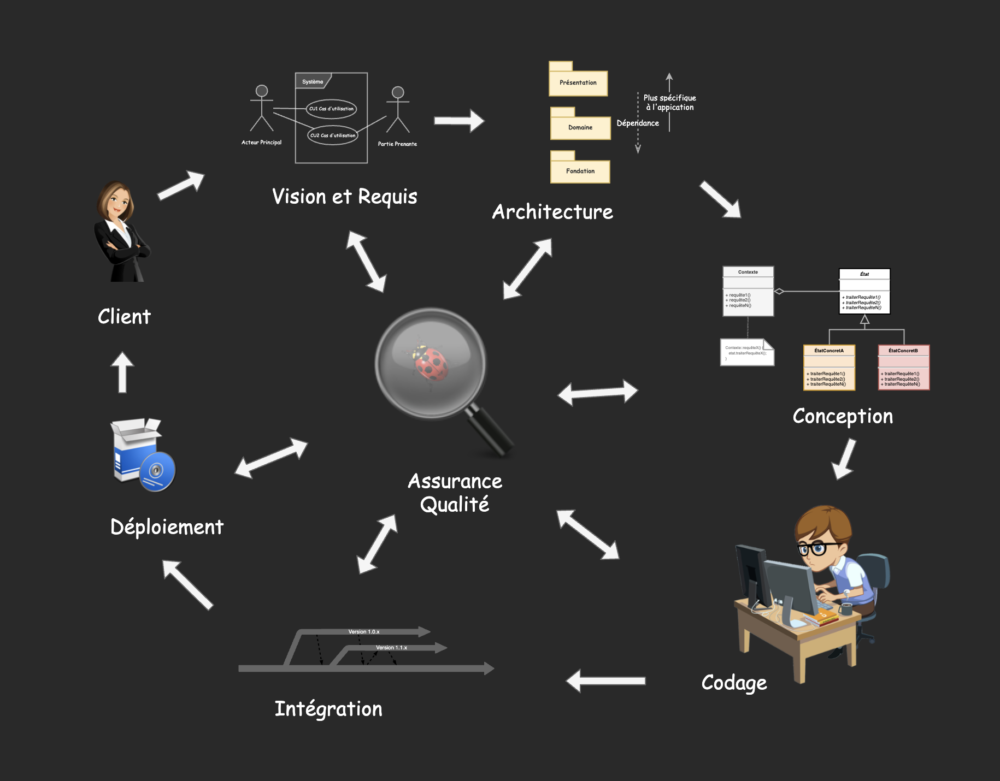

Design Patterns - Partie 1
Eric Demers, Michel Gagnon et Lévis Thériault
Conception de détails et implémentation
Design Patterns
Elements of Reusable Object-Oriented Software
- 4 co-auteurs d'où le surnom GoF (Gang of Four)
- 23 patrons de conceptions
- L'implémentation des patrons utilise le polymorphisme dynamique
Intérêt du polymorphisme
«En proposant d'utiliser un même nom de méthode pour plusieurs types d'objets différents, le polymorphisme permet une programmation beaucoup plus générique. Le développeur n'a pas à savoir, lorsqu'il programme une méthode, le type précis de l'objet sur lequel la méthode va s'appliquer. Il lui suffit de savoir que cet objet implémentera la méthode.»
Polymorphisme statique et dynamique
Le polymorphisme peut être distingué par le moment où l'implémentation est sélectionnée:
- Statiquement: Au moment de la compilation
- Dynamiquement: Au moment de l'exécution (généralement via une fonction virtuelle)
Patron itérateur (GoF)
Le patron itérateur vous permet d'effectuer une tâche sur une séquence d'éléments. Un itérateur est responsable de la logique du parcours et de la détermination de la fin de la séquence.
Itérateur (STL)
Une fois que nous avons créé un itérateur, nous pouvons l'utiliser de différentes manières. Par exemple nous pouvons utiliser des itérateurs avec des boucles for pour exécuter une tâche sur chacun des éléments.
std::list <int> l = {3, 5, 9, 7};
for (auto it = cbegin(l); it != cend(l); ++it) {
int i = *it;
std::cout << i << std::endl;
}
Itérateur (STL)
Utilisation implicite
std::list <int> l = {3, 5, 9, 7};
for (auto i: l) {
std::cout << i << std::endl;
}
Itérateur (STL)
- Les itérateurs permettent d'utiliser un algorithme indépendamment de la structure de données
- L'itérateur est l'abstraction centrale de la librairie STL en C++
Itérateur (STL)
Exemple avec l'algorithme std::max_element
std::vector<int> v = {3, 5, 9, 7};
std::vector<int>::const_iterator resultat;
resultat = std::max_element(cbegin(v), cend(v)); //-std=c++17
//resultat = std::ranges::max_element(v); //-std=c++20
auto position = std::distance(cbegin(v), resultat);
std::cout << "position: " << position << std::endl;
std::cout << "valeur: " << *resultat << std::endl;